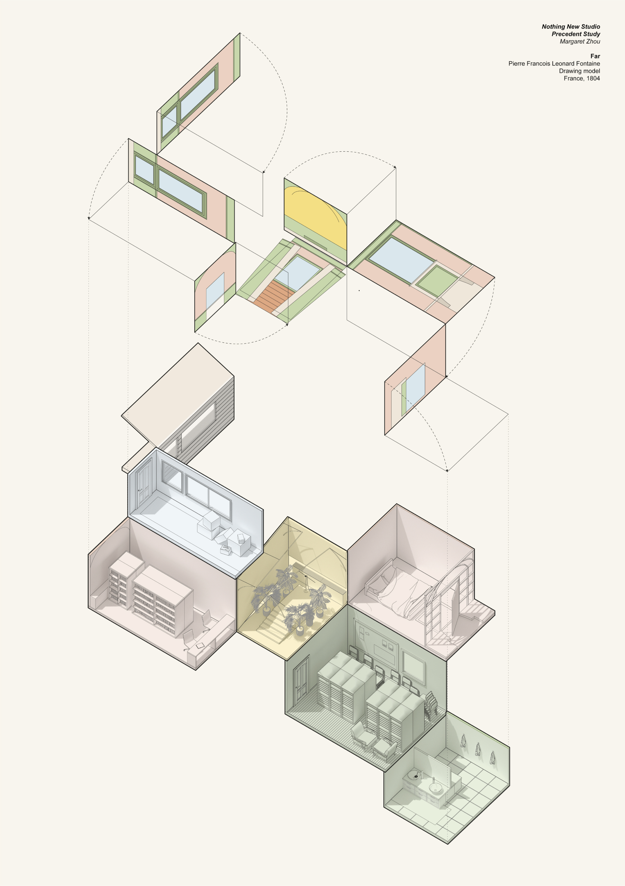

Locus
Exploring and imagining at the threshold of the physical and digital world
This is a small gallery of visual studies created to help me answer a question. Each
piece has helped me in some way, to understand, survey, break apart, or comment on a social,
infrastructural,
spatial, graphic, technological, or philosophical condition.

Around Little Boxes
Tools: Rhino, Enscape, Illustrator, Photoshop

Bedroom City
Tools: Rhino, Enscape, V-Ray, Illustrator, Photoshop

Beyond Flat
Tools: Rhino, V-Ray, Illustrator
A Study of a Study
Tools: Rhino, Enscape, Illustrator